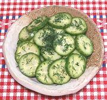

|
Cucumbers Pickled / SaladDenmark - Syltede Agurker | ||||
| Makes: Effort: Sched: DoAhead: |
12 oz ** 4 hrs Best |
Cucumber pickles / salads of this sort are served all over Scandinavia to accompany meat dishes, chicken, Danish hot dogs, and as a toppings for Smørrebrød sandwiches. | |||
|
14 ------- 1/3 1/3 1/2 1 1/4 ------- 2 |
oz --- c c t T t --- T |
Cucumbers (1) -- Pickle Cider Vinegar Water Salt Sugar (2) Pepper, black -- Garnish Dill fresh |
Make - (4 hr - 20 min work)
|